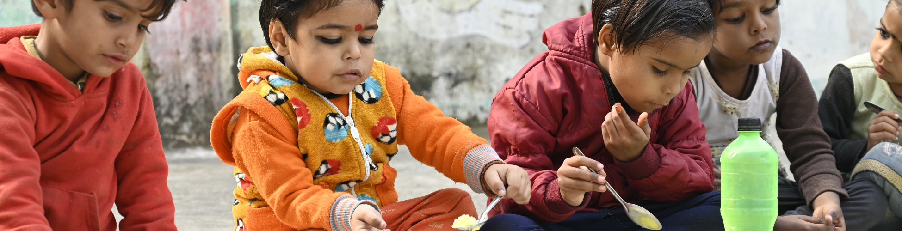

Improving access to healthcare, awareness, and preventive well-being programs for all.
Telentify is committed to supporting government programmes and schemes to ensure the last mile delivery of our work for children. We have strategic engagement with the Ministry of Women and Child Development, Ministry of Health and Family Welfare, NITI Aayog, State Governments, and Research and Academic Institutions such as Indian Council for Medical Research – National Institute of Nutrition (ICMR NIN),Indian Council of Medical Research and International Institute for Population Sciences (IIPS) to strengthen child health and nutrition and enhance health and nutrition programmes in hard-to-reach areas.
Help us build healthier communities through awareness and care.